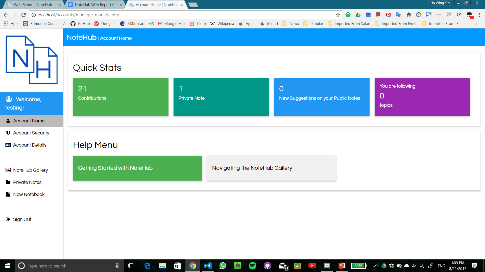
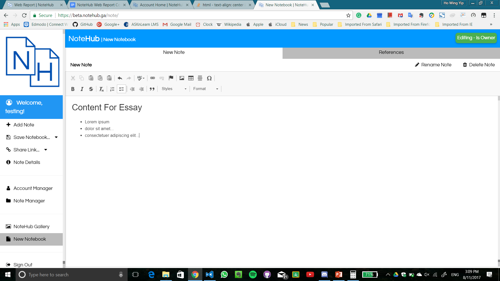
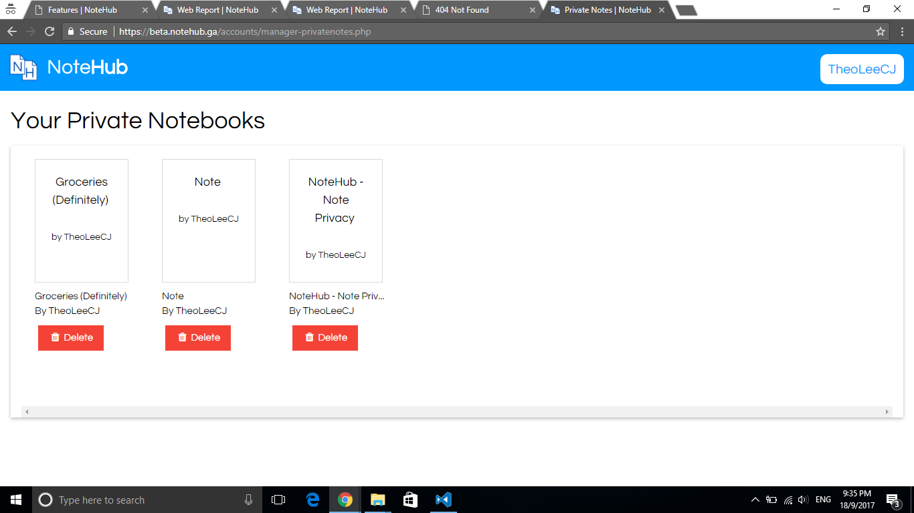
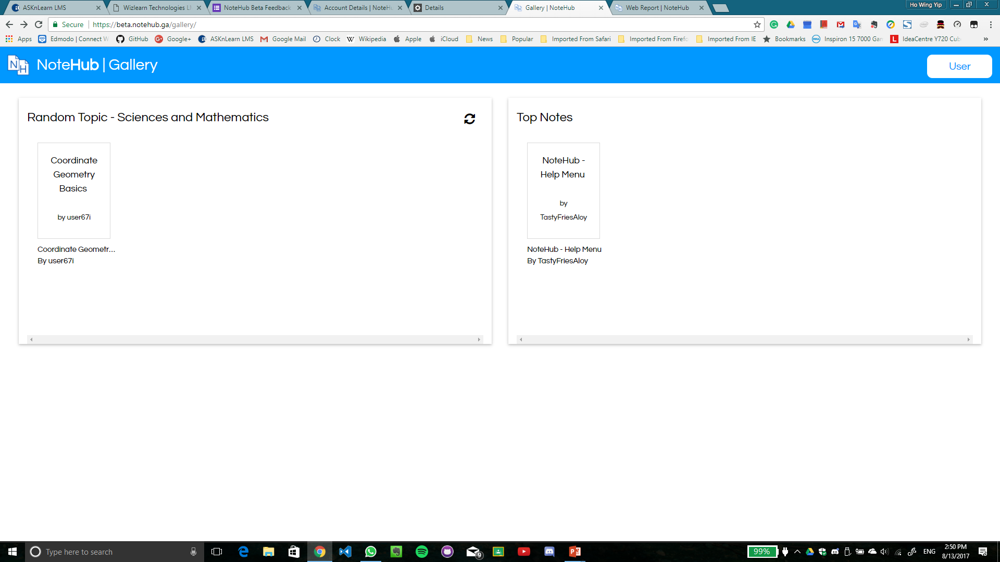

Features
|
Accounts System
We built an advanced, secure accounts system to let users authenticate into NoteHub, and from there, view notes, create notes and rate other's notes.User accounts also have their users' preferences and favourite topics tagged to them, to help give authenticated users a more personalised experience. 
Note Editor
Powered by CKEditor, our note editor operates with notebooks, much like how one would edit a OneNote notebook. However, public notes come with a special 'References' note, that is parsed by our code. This ensures that public notes are of a substantial quality, as pubic notes can be browsed by almost anyone using NoteHub.The note editor enables text formatting, images and hyperlinks to be added to notes. These functions and more are neatly organised in a bar at the top of the page. 
Note Manager
The note manager is a platform for users to edit their notes. It has the ability to create, retrieve, update and delete a user's notes. It also has a simple, easy-to-use interface. Gallery
The Gallery is the Hub in NoteHub. It gathers all of the public notes on NoteHub and places it in one place where users can view them.Currently, it has a fully-featured search which allows users to search for notes with ease. However, the gallery also includes suggestion algorithms which can put up recommended notes for users and give users suggestions on notes which they may be interested in. The gallery is supported by a clean, modern and full interface. 